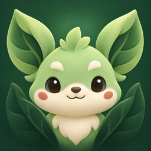
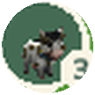
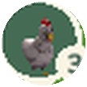
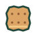
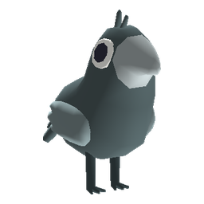

Geo PetsW RLD
RLD
Geo PetsWORLD
The comparison baseline. Everything here is what the game already uses — its cream and green, Nunito, the approved outlined symbols, the selected app image, the real splash painting, a real map capture, the approved Home concept and the real creatures — with a design system added on top. Nothing on this board was generated.
Concept only. Wildling names, rarities, biomes and item titles are real; levels, counts and prices are illustrative. One symbol, the wooden trap, was drawn for this study in the existing family's style; it is not one of the approved symbols.
Three code-native titles, set in Nunito and Fraunces with no generated art. The app icon is the game's selected companion image; it is shown unchanged.

Each phone is exactly 390×844. Scroll sideways.
SplashThe game's real splash painting. WORLD is now the larger word, and the account card is lifted off the painting instead of lying flat on it.

3
3World map and HUDThe game's real map, from a screenshot of 20 September, with the pushed interface drawn exactly over the original interface. Same positions, clearer furniture: the one-pixel blue range line becomes a band you can see, the yellow capsule becomes a player puck, and the animal markers gain a ring and a readable count. The terrain, roads, stalls and pickups are untouched.

+3 Biscuitin your bagHometownThe game's real Home, from a screenshot of 20 September. Every building there carries a text label, and they collide when you zoom out. Here a working building shows its timer and queue, an idle one a quiet name tag, and the padlocked archway is marked as new land. Finished goods are not collected: following today's decision, they arrive in your bag with a small notice.
Wildling collectionThe same cream sheet, but each Wildling now sits on its biome's tint inside a rarity ring, large enough to be looked at. Compare with today's beige tiles.
InventoryThe approved symbols, each in a well tinted by what it is: green for materials, wheat for crafted products, blue-grey for tools. The storage meter follows today's decision that the inventory has a capacity you can upgrade; whether materials and goods get separate limits is still open, so one is shown.
Confirmation popupToday's copy restructured into what you get, how long it takes and what it costs, on the highest step of the depth scale.

The map at night (only on this board)A real night capture. The wallet goes dark so it stops glaring; symbols keep their cream backing, as the identity already asks for on dark terrain. The other three boards do not address night yet.